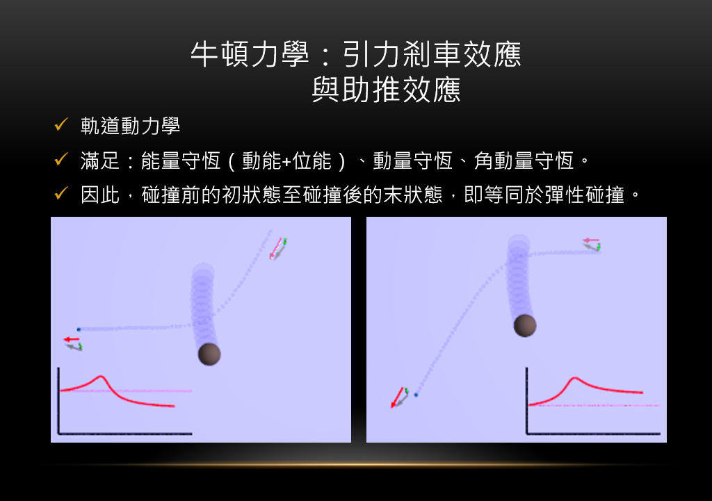
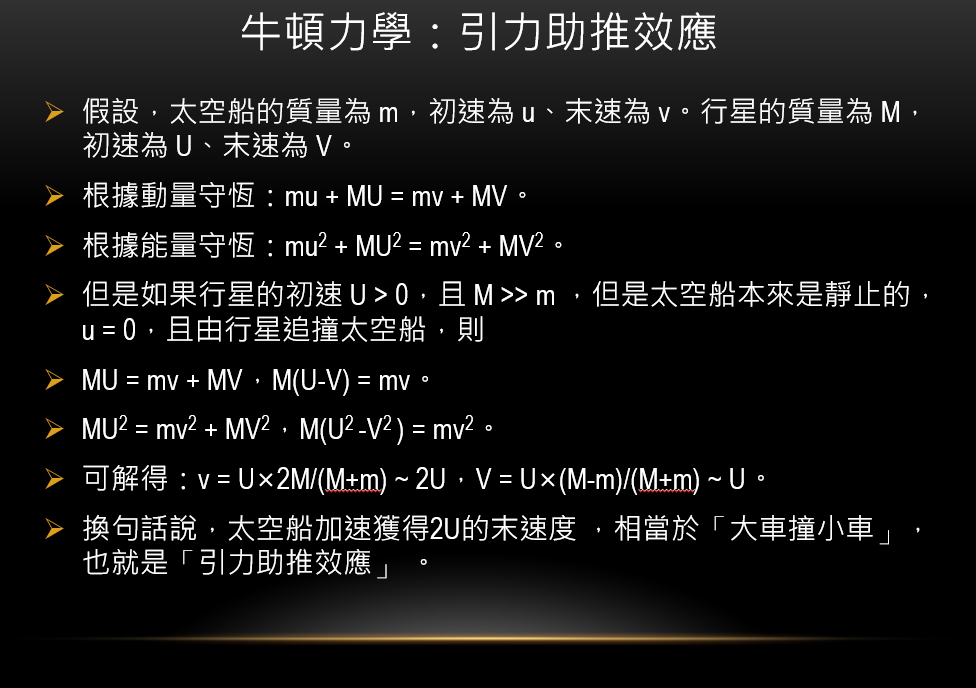
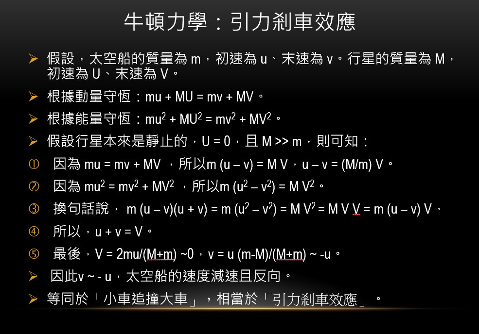

計畫擬定
試作軌道運動(太陽&地球)

simulation
初步雙星運動

simulation
試作軌道運動(太陽&地球)
simulation
初步雙星運動
simulation
理解行星運動之法則(克普勒行星三大運動定律)
試作雙星運動2 (尚未加入加速度)

simulation
雙星運動2 (加入速度)

simulation
重力助推

simulation
克普勒定律
克普勒第二定律推導
--(1)
--------------(2)
1跟2聯立
--------(3)
利用單位向量微分方程
--(4)
合併3,4得
取各個分量，得兩個常微分方程式(法向加速度&切向加速度)
而克普勒第二定律只需要切向量加速度
取行星角動量
進行微分
角動量在這是一
個運動常數，即距離&角速度都會隨時間變化
行星連線掃過的面積相依於時間
Q.E.D.克普勒第二等面積定律得證
∴加速度會隨著行星距離改變
克普勒第一定律推導
設定。這樣，角速度是
對時間微分和對角度微分有如下關係：
根據上述關係，徑向距離對時間的導數為：
在求一次導數：
代入徑向運動方程式(3)，
將此方程式除以，
則可得到一個簡單的常係數非齊次線性全微分方程式來描述行星軌道：
為了解這個微分方程式，先列出一個特解
再求解剩餘的常係數齊次線性全微分方程式，
它的解為
這裡， 與
是常數。合併特解和齊次方程式解，可以得到通解
與
是常數。合併特解和齊次方程式解，可以得到通解
選擇坐標軸，讓。
代回
其中，是離心率。
這是圓錐曲線的極座標方程式，坐標系的原點是圓錐曲線的焦點之一。假若
，則
 所描述的是橢圓軌道。這證明了克普勒第一橢圓定律。
所描述的是橢圓軌道。這證明了克普勒第一橢圓定律。
克普勒第三定律推導
在建立牛頓萬有引力定律的概念與數學架構上，克普勒第三定律是牛頓依據的重要線索之一。假若接受牛頓運動定律。試想一個虛擬行星環繞著太陽公轉，行星的移動軌道恰巧呈圓形，軌道半徑為
。
那麼，太陽作用於行星的萬有引力為 。
行星移動速度為。
依照克普勒第三定律，這速度
。
行星移動速度為。
依照克普勒第三定律，這速度
 與半徑的平方根
成反比。
所以，萬有引力。
猜想這大概是牛頓發現萬有引力定律的思路，但這個猜想無法被證實，因為在他的計算本裡，並沒有找到任何關於這方面的證據。
與半徑的平方根
成反比。
所以，萬有引力。
猜想這大概是牛頓發現萬有引力定律的思路，但這個猜想無法被證實，因為在他的計算本裡，並沒有找到任何關於這方面的證據。
克普勒第一定律闡明，行星環繞太陽的軌道是橢圓形的。橢圓的面積是
；這裡，
 與
與
 分別為橢圓的半長軸與半短軸。在克普勒第二定律推導裡，行星-太陽連線掃過區域速度
為
分別為橢圓的半長軸與半短軸。在克普勒第二定律推導裡，行星-太陽連線掃過區域速度
為
所以，行星公轉週期為
關於此行星環繞太陽，橢圓的半長軸為，
半短軸與近拱距
(近拱點A與重力中心之間的距離)，遠拱距
(遠拱點B與重力中心之間的距離)的關係分別為

如果想要知道半長軸與半短軸，必須先求得近拱距和遠拱距。依據能量守恆定律
在近拱點A與遠拱點B，徑向速度都等於零：
所以
稍微加以編排，可以得到的一元二次方程式：
其兩個根分別為橢圓軌道的近拱距與
遠拱距
代入方程式(6)與(7)

代入方程式(5)，週期的方程式為
二體問題(雙星系統)
約化為兩個獨立的單體問題
在一個物理系統裡，假設兩個粒子的質量分別為
、
，在時間
的初始位置分別為
、
，初始速度分別為
、
，
計算這兩個粒子的軌跡函數及
的問題，稱為二體問題。
根據牛頓第二定律：
其中，
表示粒子B施加於粒子A的作用力。
將方程式(1)與方程式(2)相加，可以得到一個方程式，專門描述兩個粒子的質心運動，將方程式(1)與方程式(2)相減，則可得到描述兩個粒子相對的位移向量
與時間之間的關係，將這兩個獨立的單體問題的解答結合起來，就可以求得軌跡函數
及
。
質心運動(第一個單體問題)
質心的位置由兩個粒子的位置和質量給出：
其中，是系統的總質量。
質心的加速度為：
由於沒有外力作用，將方程式(1)與(2)相加，根據牛頓第三定律，可以得到
因此，質心的加速度等於零，質心的速度為常數：
這物理系統的動量守恆：
從兩個粒子的初始位置和初始速度，就可以決定質心在任意時間的位置：
位移向量運動(第二個單體問題)
將方程式(1)、(2)分別除以、
、然後相減，可以得到
其中，
是個從粒子2指到粒子1位置的位移向量。
應用牛頓第三定律，。所以，
兩個粒子之間的作用力只是相對位置
的函數，而不是絕對位置、
的函數；否則，無法滿足物理的平移對稱，物理定律會因地而易，二體之間的物理關係無法普遍地成立於全宇宙。換句話說，在宇宙中，兩個粒子的絕對位置無關緊要，因為它們是宇宙中唯一的兩個粒子，是互相施加於彼此的作用力的源頭。誠然地，這是一個不實際的問題，可以被視為一個思想實驗。為了滿足這問題的要求，兩個粒子之間的作用力必須只是相對位置
的函數。
這樣，相減得到的方程式寫為
其中，是約化質量。
一旦求得函數與
，
就可以計算出兩個粒子的軌跡方程式及
：
角動量
兩個粒子的總角動量為
其中，
是質心對於原點的角動量，
是兩個粒子對於質心的角動量。
回想前面質心的軌跡方程式
為了簡化分析，設定質心的初始位置為0。也就是說，質心的直線運動經過原點。那麼，
角動量守恆與連心力
二體問題的總力矩是
在物理學裡，時常會遇到的萬有引力、靜電力等等，都是連心力。假設，作用力
是連心力，則
與
同直線，總力矩
等於0。
根據角動量守恆定律
因此，總角動量
是個常數，總角動量守恆。
並不是每一種力都是連心力。假設，兩個粒子都是帶電粒子，由必歐-沙伐定律與勞侖茲力定律所算出的作用力和反作用力並不是連心力。總力矩
不等於0。總角動量不守恆；這是因為還有角動量並沒有被計算在內。假若，將電磁場的角動量計算在內，則角動量守恆定律仍舊成立。
在很多物理系統裏，作用力
是一種連心力，以方程式表示為
其中，是逕向距離，
是逕向單位向量。
這物理系統的運動方程式為
平面運動與角動量守恆
總角動量與的點積為
這兩個粒子的運動軌道必定包含於垂直於
的平面。假設作用力為連心力，則由於角動量守恆，這兩個粒子必定運動於某特定平面，而常數向量
垂直於這平面。



部分資料來源為：
維基百科(克普勒定律)
維基百科(二體問題)